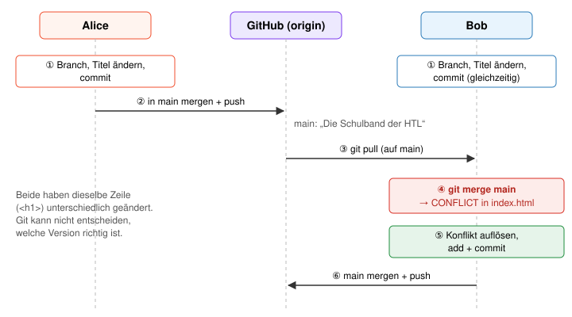

Lektion 2.3 — Teil 2: Branches & Zusammenarbeit
Demo: Merge-Konflikt mit Alice & Bob
Lernziele
- Eine Teamsituation mit zwei Klonen und einem lokalen „Server“-Repository nachstellen
- Erklären, wann und warum ein Merge-Konflikt entsteht
- Konfliktmarker lesen und einen Konflikt Schritt für Schritt auflösen
- Einen abgelehnten Push (
rejected) richtig behandeln - Einen Konflikt beim Rebase auflösen und den Unterschied zum Merge erklären
- Strategien nennen, die Konflikte selten und klein halten
1 — Das Szenario
Alice und Bob betreuen die Website der Schulband. Beide bekommen am selben Tag den Auftrag, die
Überschrift der Startseite zu verbessern — ohne voneinander zu wissen. Beide arbeiten
ordnungsgemäß auf einem eigenen Branch. Alice ist zuerst fertig und bringt ihre Änderung nach main.
Als Bob danach den aktuellen Stand von main in seinen Branch holt, kracht es.

Die Demo wurde genau so mit Git 2.43 ausgeführt. Deine Hashes werden anders aussehen, weil sie auch vom Zeitpunkt und Autor abhängen. Spiele die Demo im Terminal mit — dabei lernst du am meisten.
2 — Vorbereitung: GitHub lokal simulieren
Damit wir nicht zwei GitHub-Accounts brauchen, ersetzen wir GitHub durch ein
Bare Repository: ein Repository ohne Arbeitsverzeichnis, das nur den Inhalt von
.git enthält — genau so speichert auch GitHub Repositories. Alice und Bob bekommen je einen
Klon in einem eigenen Ordner, als säßen sie an verschiedenen Rechnern. Mit git config ohne
--global gilt der Name nur im jeweiligen Repository.
mkdir git-demo && cd git-demo
git init --bare -b main origin.git # der „Server“
git clone origin.git alice # Alice klont
cd alice
git config user.name "Alice"
git config user.email "alice@example.com"Alice legt die Startseite an und pusht sie:
<!DOCTYPE html>
<html lang="de">
<head>
<meta charset="utf-8">
<title>Schulband</title>
</head>
<body>
<h1>Unsere Schulband</h1>
<p>Proben jeden Dienstag.</p>
</body>
</html>git add index.html
git commit -m "Startseite angelegt"
git push origin main
cd ..
git clone origin.git bob # jetzt klont Bob
cd bob
git config user.name "Bob"
git config user.email "bob@example.com"
cd ..Öffne zwei Terminalfenster nebeneinander — links Alice (cd git-demo/alice), rechts Bob
(cd git-demo/bob). So siehst du immer, wer gerade was tut.
3 — Schritt 1: Beide arbeiten parallel
Alice legt einen Branch an und ändert die Überschrift auf <h1>Die Schulband der HTL</h1>:
git switch -c feature/titel-alice
# Switched to a new branch 'feature/titel-alice'
# index.html bearbeiten: <h1>Die Schulband der HTL</h1>
git commit -am "Titel geändert"
# [feature/titel-alice ca344e0] Titel geändert
# 1 file changed, 1 insertion(+), 1 deletion(-)Bob tut gleichzeitig dasselbe, findet aber, der Bandname gehört in den Titel: <h1>Schulband „Lautstärke 11“</h1>:
git switch -c feature/titel-bob
# Switched to a new branch 'feature/titel-bob'
# index.html bearbeiten: <h1>Schulband „Lautstärke 11“</h1>
git commit -am "Bandnamen in den Titel"
# [feature/titel-bob 9ec653d] Bandnamen in den Titel
# 1 file changed, 1 insertion(+), 1 deletion(-)Bis hierher ist alles in Ordnung: Jeder hat einen lokalen Commit auf seinem eigenen Branch. Noch weiß keiner vom anderen.
4 — Schritt 2: Alice bringt ihre Änderung nach main
git switch main
git merge feature/titel-alice
# Updating f5025e1..ca344e0
# Fast-forward
# index.html | 2 +-
# 1 file changed, 1 insertion(+), 1 deletion(-)
git push origin main
# To .../git-demo/origin.git
# f5025e1..ca344e0 main -> mainDa sich main seit dem Abzweigen nicht verändert hatte, war das ein Fast-Forward-Merge. Am „Server“ steht jetzt Alices Überschrift.
5 — Schritt 3: Bob holt main — der Konflikt
Bob ist fertig. Vorbildlich holt er zuerst den aktuellen Stand von main und führt ihn in seinen Branch zusammen, bevor er abgibt:
git switch main
git pull
# From .../git-demo/origin
# f5025e1..ca344e0 main -> origin/main
# Updating f5025e1..ca344e0
# Fast-forward
# index.html | 2 +-
git switch feature/titel-bob
git merge main
# Auto-merging index.html
# CONFLICT (content): Merge conflict in index.html
# Automatic merge failed; fix conflicts and then commit the result.
Beide Branches haben dieselbe Zeile geändert — ausgehend vom gemeinsamen Vorgänger
„Unsere Schulband“. Git kann nicht wissen, welche Überschrift die richtige ist. Der Merge ist
angehalten; git status sagt genau, was los ist:
git status
# On branch feature/titel-bob
# You have unmerged paths.
# (fix conflicts and run "git commit")
# (use "git merge --abort" to abort the merge)
#
# Unmerged paths:
# (use "git add <file>..." to mark resolution)
# both modified: index.htmlEin Konflikt ist kein Fehler, sondern eine Frage von Git an dich: „Welche Version soll gelten?“
Es geht nichts verloren. Wer nicht weiterweiß, kehrt mit git merge --abort zum Zustand vor dem
Merge zurück.
6 — Schritt 4: Die Konfliktmarker lesen
Git hat beide Versionen in die Datei geschrieben und mit Markern abgegrenzt:
<!DOCTYPE html>
<html lang="de">
<head>
<meta charset="utf-8">
<title>Schulband</title>
</head>
<body>
<<<<<<< HEAD
<h1>Schulband „Lautstärke 11“</h1>
=======
<h1>Die Schulband der HTL</h1>
>>>>>>> main
<p>Proben jeden Dienstag.</p>
</body>
</html>| Marker | Bedeutung |
|---|---|
<<<<<<< HEAD | Beginn der Version des aktuellen Branches (HEAD = feature/titel-bob, also Bobs Version) — in IDEs „Current Change“ bzw. „Yours“ |
======= | Trennlinie zwischen den beiden Versionen |
>>>>>>> main | Ende der Version, die hereingemergt wird (aus main, also Alices Version) — „Incoming Change“ bzw. „Theirs“ |
Alles außerhalb der Marker (hier die Absatzzeile) konnte Git automatisch übernehmen. Gibt es mehrere Konfliktstellen in einer Datei, kommt jede mit eigenen Markern vor.
7 — Schritt 5: Den Konflikt auflösen
Bob hat drei Möglichkeiten: seine Version behalten, Alices Version übernehmen oder — meistens das Beste — beide sinnvoll kombinieren. Nach kurzer Rücksprache mit Alice entscheiden sie sich für eine Kombination. Bob bearbeitet die Datei so, dass sie genau den gewünschten Endzustand enthält und alle Marker entfernt sind:
<body>
<h1>Lautstärke 11 – die Schulband der HTL</h1>
<p>Proben jeden Dienstag.</p>
</body>Mit git add teilt Bob Git mit, dass der Konflikt in dieser Datei gelöst ist. Danach schließt ein Commit den Merge ab:
git add index.html
git status
# On branch feature/titel-bob
# All conflicts fixed but you are still merging.
# (use "git commit" to conclude merge)
#
# Changes to be committed:
# modified: index.html
git commit --no-edit
# [feature/titel-bob 3286613] Merge branch 'main' into feature/titel-bob
git log --oneline --graph --all
# * 3286613 (HEAD -> feature/titel-bob) Merge branch 'main' into feature/titel-bob
# |\
# | * ca344e0 (origin/main, main) Titel geändert
# * | 9ec653d Bandnamen in den Titel
# |/
# * f5025e1 Startseite angelegt--no-edit übernimmt die vorgeschlagene Merge-Message. Der Merge-Commit hat zwei Vorgänger: Bobs Commit und Alices Commit.
Git prüft nicht, ob die Marker wirklich entfernt sind — git add nimmt alles. Suche vor dem
git add in der Datei nach <<<<<<<, öffne die Seite im Browser und teste sie.
8 — Schritt 6: Abschließen
Bobs Branch enthält jetzt den aktuellen Stand von main plus seine Änderung, der Konflikt ist gelöst. Das Mergen nach main ist dadurch ein konfliktfreier Fast-Forward:
git switch main
git merge feature/titel-bob
# Updating ca344e0..3286613
# Fast-forward
# index.html | 2 +-
git push origin main
# ca344e0..3286613 main -> main
git branch -d feature/titel-bob
# Deleted branch feature/titel-bob (was 3286613).Bob hätte auch auf main git merge feature/titel-bob ausführen und den Konflikt dort lösen
können. Den Konflikt auf dem Feature-Branch zu lösen hat aber Vorteile: main ist keinen Moment
in einem halbfertigen Zustand, und im Team mit Pull Requests (Lektion 2.4) ist es genau dieser
Weg — der Branch wird aktualisiert, bevor er nach main darf.
9 — Variante: Der abgelehnte Push
Alice ergänzt inzwischen direkt auf main eine Kontaktzeile — ohne vorher zu pullen. Bobs Merge ist aber schon am Server. Ihr Push wird abgelehnt:
git commit -am "Kontakt ergänzt"
git push origin main
# ! [rejected] main -> main (fetch first)
# error: failed to push some refs to '.../git-demo/origin.git'
# hint: Updates were rejected because the remote contains work that you do not
# hint: have locally. This is usually caused by another repository pushing to
# hint: the same ref. If you want to integrate the remote changes, use
# hint: 'git pull' before pushing again.Git schützt hier Bobs Arbeit: Ein Push darf am Server nur Commits hinzufügen, nie welche verdrängen. Alice muss zuerst Bobs Commits holen. Ist pull.rebase nicht konfiguriert, verweigert git pull die Arbeit, weil beide Seiten neue Commits haben:
git pull
# hint: You have divergent branches and need to specify how to reconcile them.
# hint: git config pull.rebase false # merge
# hint: git config pull.rebase true # rebase
# hint: git config pull.ff only # fast-forward only
# fatal: Need to specify how to reconcile divergent branches.Mit pull.rebase false (Lektion 1.2) entstünde ein Merge-Commit. Für einen einzelnen, noch nicht gepushten Commit ist ein Rebase sauberer (Lektion 2.2):
git pull --rebase
# Successfully rebased and updated refs/heads/main.
git push origin mainHier gab es keinen Konflikt, weil Alice eine andere Zeile geändert hat. Hätte es einen gegeben, würde Git ihn genau wie im nächsten Abschnitt melden.
10 — Variante: Konflikt beim Rebase
Bob startet feature/proben und ergänzt „Proben jeden Dienstag, 15 Uhr.“ Gleichzeitig wird auf main der Probentag auf Mittwoch geändert. Bob aktualisiert seinen Branch diesmal per Rebase:
git rebase main
# Rebasing (1/1)
# Auto-merging index.html
# CONFLICT (content): Merge conflict in index.html
# error: could not apply 23bbed9... Probenzeit ergänzt
# hint: Resolve all conflicts manually, mark them as resolved with
# hint: "git add/rm <conflicted_files>", then run "git rebase --continue".
# hint: You can instead skip this commit: run "git rebase --skip".
# hint: To abort and get back to the state before "git rebase", run "git rebase --abort".<<<<<<< HEAD
<p>Proben jeden Mittwoch.</p>
=======
<p>Proben jeden Dienstag, 15 Uhr.</p>
>>>>>>> 23bbed9 (Probenzeit ergänzt)Beim Rebase steht Git auf dem neuen Stand von main und spielt deinen Commit darauf ab. Deshalb
ist HEAD hier der Stand von main, und deine eigene Änderung erscheint unten als
hereinkommender Commit. In IDEs heißt deine Version dann „Incoming“ — genau umgekehrt wie beim Merge.
Bob kombiniert beide Informationen zu „Proben jeden Mittwoch, 15 Uhr.“, entfernt die Marker und setzt fort:
git add index.html
git rebase --continue # öffnet ggf. den Editor für die Message – speichern und schließen
# [detached HEAD 0c3a524] Probenzeit ergänzt
# Successfully rebased and updated refs/heads/feature/proben.
git log --oneline --graph
# * 0c3a524 (HEAD -> feature/proben) Probenzeit ergänzt
# * 562e58c (main) Probentag geändert
# * b15a50e Kontakt ergänzt
# ...| Konflikt beim Merge | Konflikt beim Rebase | |
|---|---|---|
| HEAD / „Current“ ist … | dein Branch | der Branch, auf den du rebasest (z. B. main) |
| Nach dem Lösen | git add + git commit | git add + git rebase --continue |
| Abbrechen | git merge --abort | git rebase --abort |
| Wie oft? | einmal | evtl. bei mehreren Commits nacheinander |
11 — Konflikte in VS Code und IntelliJ lösen
VS Code
Konfliktdateien stehen in Source Control unter Merge Changes (Buchstabe !). Im Editor erscheinen über jedem Konflikt die Links Accept Current Change, Accept Incoming Change, Accept Both Changes und Compare Changes. Mit Resolve in Merge Editor öffnet sich eine Drei-Fenster-Ansicht (Incoming, Current, Result). Danach + (= git add) und committen.
IntelliJ IDEA
Bei einem Konflikt öffnet sich der Dialog Conflicts mit Accept Yours, Accept Theirs und Merge…. Das Merge-Fenster zeigt links deine Version, rechts die andere, in der Mitte das Ergebnis; mit den Pfeilen übernimmst du einzelne Blöcke. Der Zauberstab übernimmt alle konfliktfreien Änderungen. Apply schließt ab.
Soll bei einer Datei komplett eine Seite gewinnen (z. B. bei einer generierten Datei), geht das im Terminal mit git checkout --ours datei bzw. git checkout --theirs datei und anschließendem git add datei. Beim Rebase sind auch hier ours und theirs vertauscht.
12 — Konflikte vermeiden
Konflikte lassen sich nicht ganz verhindern, aber selten und klein halten:
| Maßnahme | Warum |
|---|---|
Oft pullen, main regelmäßig in den Branch holen | Kleine Unterschiede sind schnell zusammengeführt, große nicht. |
| Kurze Branches, kleine Commits | Je kürzer ein Branch lebt, desto weniger kann sich auf main ändern. |
| Aufgaben im Team absprechen | Wer weiß, wer an welcher Datei arbeitet, ändert nicht gleichzeitig dieselbe Stelle (Alice und Bob hätten das gebraucht). |
| Keine unnötigen Massenänderungen | Ganze Dateien neu formatieren oder Einrückungen ändern erzeugt Konflikte in jeder Zeile. |
| Einheitliche Formatierung (z. B. Prettier, IDE-Einstellungen) | Sonst formatiert jeder die Datei anders, und Git sieht überall Änderungen. |
Projektschritt
Einen Konflikt im eigenen Steckbrief erzeugen und lösen
Du brauchst zwei Klone deines Repositorys steckbrief (z. B. steckbrief und steckbrief-2 aus Aufgabe 3 der Lektion 1.2). Du spielst beide Rollen.
- Im ersten Klon: Branch
feature/titel-a,<h1>ändern, committen, inmainmergen, pushen. - Im zweiten Klon: zuerst
git switch mainundgit pullnicht ausführen! Branchfeature/titel-b, dieselbe<h1>-Zeile anders ändern, committen. - Im zweiten Klon:
mainpullen, infeature/titel-bgit merge main— Konflikt. - Konflikt lösen (Terminal oder IDE), committen, nach
mainmergen, pushen, Branch löschen. - Im ersten Klon
git pullund mitgit log --oneline --graphkontrollieren.
git switch -c feature/titel-b
git commit -am "Titel mit Klasse ergänzt"
git switch main && git pull
git switch feature/titel-b
git merge main # CONFLICT
# index.html bearbeiten, Marker entfernen
git add index.html
git commit --no-edit
git switch main
git merge feature/titel-b
git push
git branch -d feature/titel-bHäufige Fehler
Die Seite zeigt plötzlich <<<<<<< HEAD und zwei Überschriften. Die Datei wurde mit git add . vorgemerkt, bevor die Marker entfernt waren.
Vor dem git add die Datei nach <<<<<<<, ======= und >>>>>>> durchsuchen und die Seite testen. Wurde schon committet: Marker entfernen und als neuen Commit nachreichen.
In VS Code wurde „Accept Both Changes“ geklickt. Die Seite hat jetzt zwei <h1>-Überschriften untereinander.
„Accept Both“ setzt nur beide Blöcke hintereinander. Das Ergebnis immer lesen und so bearbeiten, dass es inhaltlich stimmt.
Der Push wird mit rejected abgelehnt, und man versucht es mit git push --force. Damit sind die Commits der anderen am Server gelöscht.
Ein abgelehnter Push heißt: Zuerst die neuen Commits holen (git pull bzw. git pull --rebase), eventuelle Konflikte lösen, dann normal pushen.
Aufgaben
Spiele die Abschnitte 2–8 vollständig nach. Löse den Konflikt dabei einmal im Terminal und — nach git merge --abort und erneutem git merge main — einmal im Merge-Editor von VS Code oder IntelliJ.
Erweitere die Demo: Alice und Bob ändern beide die Überschrift und den Probentag, Bob zusätzlich eine dritte Zeile, die Alice nicht anrührt. Wie viele Konfliktstellen meldet Git? Welche Zeile führt Git automatisch zusammen?
Alice löscht impressum.html und pusht, Bob ändert gleichzeitig eine Zeile darin. Was meldet Git beim Merge? Wie sieht git status aus? Löse den Konflikt einmal mit git rm, einmal mit git add.
Schreibe ein Bash-Skript konflikt-demo.sh, das die komplette Vorbereitung und die Schritte 1–3 automatisch ausführt und mit dem Konflikt stehen bleibt (Tipp: Dateiinhalte mit cat > index.html <<'EOF' schreiben, Zeilen mit sed -i ersetzen). Damit kannst du die Situation jederzeit neu erzeugen und üben.
Quiz
5 Fragen · zum Aufklappen klicken
Frage 1 Wann entsteht ein Merge-Konflikt?
Frage 2 Bob führt auf feature/titel-bob git merge main aus. Was steht zwischen <<<<<<< HEAD und =======?
Frage 3 Welche Schritte gehören zum Auflösen eines Konflikts beim Merge?
Mehrere Antworten sind richtig.
git add als gelöst markieren, mit git commit den Merge abschließen. Ein Force-Push ist dafür nie nötig.Frage 4 Dein Push wird mit rejected (fetch first) abgelehnt. Was ist der richtige nächste Schritt?
Frage 5 Was ist beim Konflikt während eines Rebase anders als beim Merge?
git add und git rebase --continue.